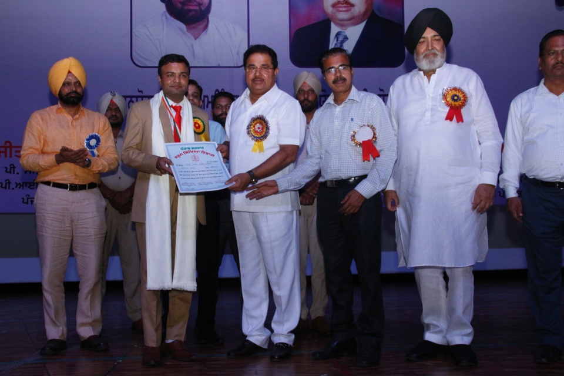

Dr. Saurabh Manro Honoured With Teaching Excellence Awards 2018
An award is something given to a person in recognition of his excellence in a certain field. Teaching Excellence Awards 2018 (TEA - 2018) was an effort of MT Research and Educational Services (MTRES) in association with Buzzingg and Indian Achievers Story to recognition the best teachers (Nation Builders) for their special contribution in respective domain. Meet one of the awardees, Dr. Saurabh Manro, who has been honoured with TEA-2018 as Excellent Teacher. Never judge a book by it’s cover. An average student since childhood, it’s almost impossible to believe the amount of diligence put by Dr. Saurabh Munro to stand in this position as he his today. He is a two-time GATE clearer with absolutely fabulous ranks i.e. Rank 41 in 2007 and Rank 14 in 2016. He has done masters in two subjects namely Statistics and Mathematics and also a doctorate degree in Mathematics. Well, the qualifications of this young man is never ending, he also holds a Post Doctorate Degree in Mathematics along with PGDAST, B.Ed, M.Ed and UGC (NET)-CSIR.
Dr. Saurabh Manro was honoured with MTRES Teaching Excellence Award 2018
His professional journey as an Assistant Professor of Mathematics started in July 2004 at Regional Institute of Management and Technology. At the said institute, he taught M.Sc. (Maths), M.BA, M.CA students. In the starting of the year 2007, he left his job and joined Govt. Service as a Science teacher at Govt. High School, Sirthala, Ludhiana. Here, he taught Math/Science from standard 6th to 12th students. Again, late in July 2012, he got transferred to Govt. Middle School Khattra (Near Khanna). Here, he taught Math/Science from 6th to 8th class students. Recently he has been honoured with Punjab State Teacher Award-2017 from Honourable Education Minister of Punjab – Sh. O.P. Soni and from Education Secretary – Sh. Krishan Kumar.
Dr. Saurabh Manro receiving Punjab State Teacher Award - 2017 from Honorable Education Minister of Punjab, Sh. O.P. Soni and Education Secretary, Sh. Krishan Kumar
His quest for learning had just started, he secured First Rank in Mathematics Lecturer Exam conducted by PPSC for Technical Colleges posts. He also secured First Rank in Mathematics Lecturer Exam conducted by GNDU for School Education Board, Punjab. He is a life member of Indian Mathematical Institute as well as Ramanujan Mathematical Society. Four of his school students passed in National Level NMMS Examination from last two years. His school participated in 5th National Science Film Festival 2015 and workshops on “Science Film Making” held during February 4th to 8th, 2015 at Regional Science City, Lucknow, organized by Vigyan Prasar and National Council of Science Museums, Kolkata. He has also published 2 articles in Nirantar Soch magazine in the subjects of Science and Mathematics. We quote his words here, “Learning is a life long process and as a learner I have published a total of 120 Mathematical research papers in International Journals”. He has also attended various conferences and workshops. This has led him to where he stands today, an honourable receiver of various awards till now, he has done tremendous studies in his field of expertise and will always continue to inspire students everyday with the level of sheer determination and passion because it’s rightly said, where there’s a will, there’s a way. He opened “Teri Meri Dukan” (a stationery shop) in his school, where his school students can get notebooks, pencils, pens or any other stationery items free of cost. In order to increase the literacy among children, he actively encouraged parents, community, panchayat members,